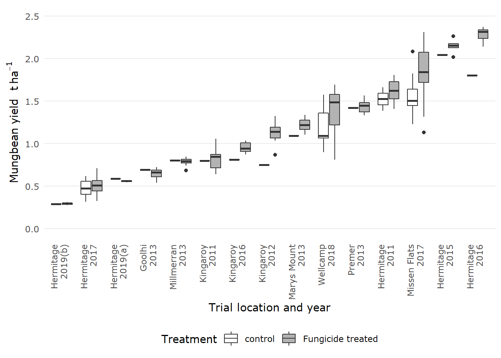

3 Preliminary Analysis
3.1 Explore and Visualise Data
The data explored in the PM_MB_dat data frame is a list of mean values from each treatment in each respective experiment.
These preliminary analyses will describe the data and then investigate any change in mungbean yields which is attributable to the fungicide treatment.
All fungicide ai treatments are still contained in the PM_MB_dat data, so filtering the data might be necessary to only inspect DMI treatments.
3.1.1 Descriptive statistics
3.1.1.1 Spatio-temporal variation
Lets look at how many trials were undertaken each season in trials including DMI fungicides.
tmp1 <- PM_MB_dat %>%
filter(fungicide_ai == "tebuconazole" |
fungicide_ai == "propiconazole")%>%
distinct(trial_ref, location, year)%>%
arrange(year)
table(tmp1$year)##
## 2011 2012 2013 2015 2016 2017 2018 2019
## 2 1 4 1 2 2 1 2Also the location of the trials including DMI fungicides.
##
## Goolhi Hermitage Kingaroy Marys Mount Millmerran Missen Flats
## 1 6 3 1 1 1
## Premer Wellcamp
## 1 13.1.1.2 Mean yield
What is the variation in yield over all the trials (including non-DMI fungicide trials) in the no spray control and fungicide treated plots.
PM_MB_dat %>%
filter(fungicide_ai == "control")%>%
summarise(mean_yield = mean(grain_yield.t.ha. * 1000),
minimum_yield = min(grain_yield.t.ha. * 1000),
maximum_yield = max(grain_yield.t.ha. * 1000),
yield_stdev = sd(grain_yield.t.ha. * 1000),
yield_SE = sd(grain_yield.t.ha. * 1000)/
sqrt(n())) %>%
kable(align = 'c',
caption = "Average yield statistics for no spray contol plots"
)| mean_yield | minimum_yield | maximum_yield | yield_stdev | yield_SE |
|---|---|---|---|---|
| 1085.918 | 289.4 | 2083.9 | 498.6859 | 74.33971 |
What is the yield variation in no spray control trials yield over only the DMI fungicide trials.
DMITrials <- PM_MB_dat %>%
filter(fungicide_ai == "tebuconazole" |
fungicide_ai == "propiconazole")%>%
distinct(trial_ref)%>%
pull()
PM_MB_dat %>%
filter(trial_ref %in% DMITrials)%>%
filter(fungicide_ai == "control" )%>%
summarise(mean_yield = mean(grain_yield.t.ha.*1000),
minimum_yield = min(grain_yield.t.ha.*1000),
maximum_yield = max(grain_yield.t.ha.*1000),
yield_sterr = sd(grain_yield.t.ha.*1000)/(sqrt(length(grain_yield.t.ha.))))%>%
kable(align = 'c',
caption = "Average yield statistics for control plots in trials which used a DMI fungicide")| mean_yield | minimum_yield | maximum_yield | yield_sterr |
|---|---|---|---|
| 1064.195 | 289.4 | 2083.9 | 83.94989 |
Mean yields in DMI fungicide treated plots
PM_MB_dat %>%
filter(fungicide_ai == "tebuconazole" |
fungicide_ai == "propiconazole")%>%
summarise(mean_yield = mean(grain_yield.t.ha.*1000),
minimum_yield = min(grain_yield.t.ha.*1000),
maximum_yield = max(grain_yield.t.ha.*1000),
yield_sterr = sd(grain_yield.t.ha.*1000)/(sqrt(length(grain_yield.t.ha.))))%>%
kable(align = 'c',
caption = "Average yield statistics for DMI fungicide treated plots")| mean_yield | minimum_yield | maximum_yield | yield_sterr |
|---|---|---|---|
| 1217.958 | 275.9 | 2526.3 | 58.33326 |
Trial mean yields in all fungicide treated plots
PM_MB_dat %>%
group_by(trial_ref, location, year)%>%
summarise(mean_yield = mean(grain_yield.t.ha.*1000),
minimum_yield = min(grain_yield.t.ha.*1000),
maximum_yield = max(grain_yield.t.ha.*1000),
yield_sterr = sd(grain_yield.t.ha.*1000)/(sqrt(length(grain_yield.t.ha.))))%>%
arrange(yield_sterr) %>%
kable(align = 'c',
caption = "Average yield statistics for DMI fungicide treated plots")## `summarise()` regrouping output by 'trial_ref', 'location' (override with `.groups` argument)| trial_ref | location | year | mean_yield | minimum_yield | maximum_yield | yield_sterr |
|---|---|---|---|---|---|---|
| mung1819/02 | Hermitage | 2019 | 293.3000 | 275.9 | 311.7 | 7.443901 |
| mung1819/01 | Hermitage | 2019 | 566.3250 | 543.2 | 587.2 | 9.141059 |
| BB1305 | Millmerran | 2013 | 787.3818 | 683.2 | 847.4 | 13.464038 |
| mung1617/01 | Hermitage | 2017 | 504.8963 | 316.3 | 712.5 | 13.499050 |
| AM1305 | Goolhi | 2013 | 655.3000 | 541.7 | 722.2 | 17.242843 |
| AM1303 | Premer | 2013 | 1439.8273 | 1333.7 | 1563.9 | 22.465489 |
| mung1011/02 | Kingaroy | 2011 | 812.3350 | 640.8 | 1058.6 | 24.650758 |
| AM1304 | Marys Mount | 2013 | 1207.4000 | 1093.8 | 1336.8 | 25.702953 |
| mung0910/02 | Kingaroy | 2010 | 1368.8667 | 1177.0 | 1542.0 | 26.250055 |
| mung0001/01 | Bongeen_1 | 2001 | 579.1429 | 498.0 | 700.0 | 27.819511 |
| mung1516/02 | Kingaroy | 2016 | 933.6286 | 810.7 | 1033.9 | 30.761802 |
| mung1415/01 | Hermitage | 2015 | 2129.5833 | 2018.3 | 2262.4 | 36.448881 |
| mung1112/02 | Kingaroy | 2012 | 1108.3333 | 751.0 | 1323.0 | 38.308108 |
| mung1011/01 | Hermitage | 2011 | 1598.8083 | 1387.6 | 1808.3 | 41.403948 |
| mung1617/02 | Missen Flats | 2017 | 1820.6204 | 1130.2 | 2642.2 | 45.380237 |
| mung1718/01 | Wellcamp | 2018 | 1348.7167 | 812.8 | 1690.3 | 52.794618 |
| mung1516/01 | Hermitage | 2016 | 2213.7143 | 1802.9 | 2370.1 | 74.774325 |
| mung0910/01 | Hermitage | 2010 | 1340.4800 | 1001.1 | 1891.9 | 82.143578 |
Lets look at the yield gains in each trial compared to the no spray control, we will also calculate the proportional grain yield gains.
for (i in unique(PM_MB_dat$trial_ref)) {
# Loop code over each trial reference
dat1 <- PM_MB_dat[PM_MB_dat$trial_ref == i, ]
if (any(is.na(unique(dat1$row_spacing)))) {
# If there is no recorded row.spacing don't calculate proportional yield, skip to the next trial
warning(
unique(dat1$trial_ref),
" at ",
unique(dat1$location),
" in year ",
unique(dat1$year),
" has unknown row.spacing (NA)\n 'yield_gain' and 'proportional yield gain' not calculated\n"
)
next()
}
for (j in unique(dat1$row_spacing)) {
# Loop within trial row_spacing
dat2 <- dat1[dat1$row_spacing == j, ]
controlY <-
mean(dat2[dat2$fungicide_ai == "control", "grain_yield.t.ha."]) #Mean taken as some trials had multiple control reps
# Calculate the yield gain relative to the no spray control (controlY)
dat2$yield_gain <- dat2$grain_yield.t.ha. - controlY
dat2$prop_YG <- dat2$yield_gain / controlY
# insert NA as yield_gain and proportional yield gain for the controls
dat2[dat2$fungicide_ai == "control", c("yield_gain", "prop_YG")] <-
NA
# Reassign values to row_spacing subset
dat1[dat1$row_spacing == j, ] <- dat2
}
# Reassign values to trial_ref subset
PM_MB_dat[PM_MB_dat$trial_ref == i, ] <- dat1
}## Warning: AM1303 at Premer in year 2013 has unknown row.spacing (NA)
## 'yield_gain' and 'proportional yield gain' not calculated# ____________________________________________
# calculate yield gain and prop_yield gain for experiments with no row spacing data
dat1 <- PM_MB_dat[PM_MB_dat$trial_ref == "AM1303", ]
controlY <-
mean(dat1[dat1$fungicide_ai == "control", "grain_yield.t.ha."])
dat1$yield_gain <- dat1$grain_yield.t.ha. - controlY
dat1$prop_YG <- dat1$yield_gain / controlY
dat1[dat1$fungicide_ai == "control", c("yield_gain", "prop_YG")] <-
c(NA, NA)
PM_MB_dat[PM_MB_dat$trial_ref == "AM1303", ] <- dat1Lets show the yield gains in each trial as a table and plot
PM_MB_dat %>%
filter(trial_ref %in% DMITrials)%>% # selects only the trials with DMI fungicide treatments
filter(fungicide_ai == "tebuconazole" |
fungicide_ai == "propiconazole")%>%
group_by(trial_ref, location, year)%>%
summarise(yield_gain_m = mean(yield_gain),
yield_gain_se = sd(yield_gain, na.rm = T)/sqrt(n()),
yg_n = n(),
.groups = "drop")%>%
arrange(yield_gain_m)## # A tibble: 15 x 6
## trial_ref location year yield_gain_m yield_gain_se yg_n
## <chr> <chr> <chr> <dbl> <dbl> <int>
## 1 AM1303 Premer 2013 -0.0454 0.0372 3
## 2 AM1305 Goolhi 2013 -0.0347 0.0342 3
## 3 BB1305 Millmerran 2013 -0.0294 0.0170 3
## 4 mung1819/01 Hermitage 2019 -0.0278 0.00838 3
## 5 mung1819/02 Hermitage 2019 0.0052 0.0104 3
## 6 mung1617/01 Hermitage 2017 0.0302 0.0204 30
## 7 mung1011/02 Kingaroy 2011 0.0606 0.0634 6
## 8 AM1304 Marys Mount 2013 0.0919 0.0432 3
## 9 mung1415/01 Hermitage 2015 0.102 0.0395 5
## 10 mung1011/01 Hermitage 2011 0.132 0.113 2
## 11 mung1516/02 Kingaroy 2016 0.143 0.0272 6
## 12 mung1718/01 Wellcamp 2018 0.219 0.0461 12
## 13 mung1617/02 Missen Flats 2017 0.281 0.0437 30
## 14 mung1112/02 Kingaroy 2012 0.383 0.0443 6
## 15 mung1516/01 Hermitage 2016 0.479 0.0356 6bw_labels <-
PM_MB_dat %>%
filter(trial_ref %in% DMITrials)%>%
group_by(trial_ref, location, year)%>%
summarise(m_gy = mean(grain_yield.t.ha.)) %>%
mutate(trial = paste(location,year,sep = "\n")) %>%
arrange(m_gy) %>%
pull(trial)## `summarise()` regrouping output by 'trial_ref', 'location' (override with `.groups` argument)bw_labels[1] <- paste0(bw_labels[1],"(b)")
bw_labels[3] <- paste0(bw_labels[3],"(a)")
fungicide_spray_plot <-
PM_MB_dat %>%
filter(trial_ref %in% DMITrials)%>%
mutate(spray_treat = ifelse(fungicide_ai == "control","control", "Fungicide treated"))%>%
group_by(trial_ref, location, year)%>%
ggplot(aes(reorder(trial_ref, grain_yield.t.ha.), grain_yield.t.ha., fill = spray_treat))+
geom_boxplot()+
theme(axis.text.x = element_text(angle = 90, hjust = 1, vjust = 0.3))+
xlab("Trial location and year")+
ylab(bquote('Mungbean yield '*t~ha^-1*''))+
scale_x_discrete(labels = bw_labels)+
ylim(0,2.5)+
scale_fill_grey(start = 1, end = 0.7)+
labs(colour = "Fungicide treatment")+
guides(fill = guide_legend(title = "Treatment"))
fungicide_spray_plot## Warning: Removed 2 rows containing non-finite values (stat_boxplot).
3.1.1.3 Full trial summary
Lets inspect a summary of both powdery mildew severity and grain yield for trials including DMI funcgicides.
Sev_yield_table <-
PM_MB_dat %>%
filter(
fungicide_ai == "control" |
fungicide_ai == "tebuconazole" |
fungicide_ai == "propiconazole"
) %>%
mutate(PM_sev_control = case_when(fungicide_ai == "control" ~ PM_final_severity,
TRUE ~ NA_real_)) %>%
mutate(PM_sev_treat = case_when(fungicide_ai != "control" ~ PM_final_severity,
TRUE ~ NA_real_)) %>%
mutate(PM_y_control = case_when(fungicide_ai == "control" ~ grain_yield.t.ha.,
TRUE ~ NA_real_)) %>%
mutate(PM_y_treat = case_when(fungicide_ai != "control" ~ grain_yield.t.ha.,
TRUE ~ NA_real_)) %>%
group_by(trial_ref,
location,
year,
planting_date,
first_sign_disease) %>%
summarise(n = n(),
m_PM_sev_control = round(mean(PM_sev_control, na.rm = TRUE),digits = 2),
min_PM_sev = round(min(PM_sev_treat, na.rm = TRUE),digits = 2),
max_PM_sev = round(max(PM_sev_treat, na.rm = TRUE),digits = 2),
m_PM_yield_control = round(mean(PM_y_control, na.rm = TRUE),digits = 3),
min_PM_yield = round(min(PM_y_treat, na.rm = TRUE),digits = 3),
max_PM_yield = round(max(PM_y_treat, na.rm = TRUE),digits = 3),
.groups = "drop")%>%
filter(min_PM_sev < 10) %>% # anything exceeding 9 is off the scale and should be removed due to it being the result of min(NA, na.rm = T) ie. Inf
arrange(year)%>%
mutate(PM_sev_range = paste(min_PM_sev, max_PM_sev, sep = " - "))%>%
mutate(yield_range = paste(min_PM_yield, max_PM_yield, sep = " - "))%>%
select(-c(min_PM_sev,max_PM_sev,min_PM_yield,max_PM_yield)) %>%
flextable() %>%
set_header_labels(trial_ref = "Trial code",
location = "Location",
year = "Year",
planting_date = "Sowing date",
first_sign_disease = "PM onset",
n = "n",
m_PM_sev_control = "Control mean\nPM severity",
PM_sev_range = "PM severity\nrange*",
m_PM_yield_control = "Control\nmean yield",
yield_range = "Yield range\n(t / ha)*"
) %>%
fontsize(size = 8,part = "body")%>%
fontsize(size = 10, part = "header")%>%
align(j = 3:10, align = "center", part = "all") %>%
autofit() %>%
width(j = 7:10, width = 0.9)%>%
width(j = 3, width = 0.5)%>%
set_caption("Table 1: Mean yield and severity for trials included in the meta-analysis. Powdery mildew (PM) onset, number of treatments per trial (n), PM mean plot severity of the non-fungicide treated plots and the severity range in fungicide treatments; Mean yield in non-fungicide treated control and the range of yields in the fungicide treatments in tonnes per hectare")
Sev_yield_tableTrial code | Location | Year | Sowing date | PM onset | n | Control mean | Control | PM severity | Yield range |
mung1011/01 | Hermitage | 2011 | 2011-01-24 | 2011-03-28 | 4 | 4.83 | 1.525 | 2 - 2.33 | 1.544 - 1.769 |
mung1011/02 | Kingaroy | 2011 | 2011-02-02 | 2011-03-22 | 8 | 7.83 | 0.798 | 3 - 5.33 | 0.641 - 1.059 |
mung1112/02 | Kingaroy | 2012 | 2012-02-03 | 2012-03-12 | 7 | 8.00 | 0.751 | 1.7 - 8 | 1.036 - 1.323 |
AM1303 | Premer | 2013 | 2012-12-28 | 2013-02-28 | 4 | 8.00 | 1.422 | 2 - 7.83 | 1.334 - 1.45 |
AM1304 | Marys Mount | 2013 | 2012-12-24 | 2013-03-16 | 4 | 3.00 | 1.094 | 1.38 - 3.17 | 1.117 - 1.265 |
AM1305 | Goolhi | 2013 | 2013-01-23 | 2013-03-25 | 4 | 7.00 | 0.694 | 1 - 3.75 | 0.604 - 0.722 |
BB1305 | Millmerran | 2013 | 2013-01-12 | 2013-03-13 | 4 | 8.00 | 0.802 | 1.62 - 8 | 0.744 - 0.803 |
mung1415/01 | Hermitage | 2015 | 2015-01-19 | 2015-03-16 | 6 | 7.80 | 2.045 | 3.2 - 6.6 | 2.018 - 2.262 |
mung1516/01 | Hermitage | 2016 | 2016-02-03 | 2016-03-08 | 7 | 8.00 | 1.803 | 3 - 7.5 | 2.141 - 2.37 |
mung1516/02 | Kingaroy | 2016 | 2016-02-11 | 2016-03-09 | 7 | 8.25 | 0.811 | 2.25 - 7.75 | 0.873 - 1.034 |
mung1617/01 | Hermitage | 2017 | 2017-02-13 | 2017-03-24 | 39 | 8.00 | 0.476 | 5.33 - 8 | 0.327 - 0.683 |
mung1617/02 | Missen Flats | 2017 | 2017-01-27 | 2017-03-07 | 39 | 8.96 | 1.561 | 7.67 - 9 | 1.13 - 2.526 |
mung1718/01 | Wellcamp | 2018 | 2018-02-13 | 2018-03-21 | 18 | 8.22 | 1.194 | 5.67 - 7.67 | 1.084 - 1.69 |
mung1819/01 | Hermitage | 2019 | 2018-02-04 | 2018-04-12 | 4 | 7.50 | 0.587 | 5 - 7.17 | 0.543 - 0.571 |
mung1819/02 | Hermitage | 2019 | 2018-02-18 | 2018-04-12 | 4 | 7.83 | 0.289 | 4.6 - 7.33 | 0.276 - 0.312 |
Various factors have been studied in the previous experiments which may influence the subsequent meta-analysis. On this page, unless stated, the following plots and analyses were made disregarding other effects. The following factors are postulated to influence mungbean grain yield and/or powdery mildew mean plot severity.
1 Fungicide type
2 Fungicide dose (varies only slightly within some fungicide types)
3 Number of fungicide sprays
4 Timing of fungicide spray/s relative to first sign of disease
5 Host cultivar (probably is a co-variate with season due to changing cultivars over time)
6 Experiment location
7 Row spacing
8 Final disease rating / disease pressure
The data plotted below are from 18 field trials between ( - ) of which the details are described in the Trials considered for inclusion in meta-analysis section.
3.1.2 Fungicides
3.1.2.1 Fungicide type
Before we exclude non-DMI fungicides let’s have a look at the efficacy of the other fungicides in comparison to the DMIs. For this comparison we will focus on the proportional yield saved, relative to the no spray control. The primary focus of this research is the effect of fungicide on mitigating yield loss due to disease. We are using proportional yield, relative to the no spray control, to reduce the effect of location and seasonal influences.
PM_MB_dat %>%
group_by(fungicide_ai, total_fungicide) %>%
summarise(
n = length(prop_YG),
lower_2.5 = quantile(prop_YG, na.rm = T, c(0.025)),
median = median(prop_YG, na.rm = T),
mean = mean(prop_YG, na.rm = T),
upper_97.5 = quantile(prop_YG, na.rm = T, c(0.975))
) %>%
filter(n >= 5) %>% # remove any fungicide groups with less than 5 observations
arrange(desc(median)) %>%
kable(
caption = "Fungicide effect on proportion of yield gain.",
col.names = c(
"Fungicide active ingredient",
"Total fungicide applications",
"n Treatments",
"2.5% quartile",
"Median proportional grain yield",
"Mean proportional grain yield",
"97.5 % quartile"
),
align = "c"
) %>%
kable_styling(fixed_thead = T, full_width = T) %>%
column_spec(c(2, 3), width = "1cm") %>%
kableExtra::add_footnote(label = "Fungicides with less than five observations were omitted from this table")| Fungicide active ingredient | Total fungicide applications | n Treatments | 2.5% quartile | Median proportional grain yield | Mean proportional grain yield | 97.5 % quartile |
|---|---|---|---|---|---|---|
| 200 g/L tebuconazole + 120 g/L azoxystrobin | 2 | 18 | -0.2370852 | 0.2180954 | 0.1597781 | 0.3561961 |
| tebuconazole | 2 | 31 | -0.1444260 | 0.1641791 | 0.1637018 | 0.4867519 |
| propiconazole | 2 | 25 | -0.1614388 | 0.1359108 | 0.2052755 | 0.6641811 |
| propiconazole | 1 | 24 | -0.2070297 | 0.1332710 | 0.1136816 | 0.4386503 |
| 200 g/L tebuconazole + 120 g/L azoxystrobin | 1 | 18 | -0.1624297 | 0.1264091 | 0.1722395 | 0.4469985 |
| tebuconazole | 1 | 33 | -0.1187344 | 0.1089182 | 0.1063287 | 0.4858887 |
| sulphur | 2 | 7 | -0.0991580 | 0.0881653 | 0.1639453 | 0.6167386 |
| 200 g/L azoxystrobin + 80 g/L cyproconazole | 2 | 9 | -0.1273899 | 0.0842830 | 0.1892034 | 0.5677763 |
| tebuconazole | 3 | 5 | -0.1700857 | 0.0815279 | 0.0677670 | 0.2552920 |
| 200 g/L azoxystrobin + 80 g/L cyproconazole | 1 | 15 | -0.1080565 | 0.0551238 | 0.1209152 | 0.6131158 |
| sulphur | 3 | 7 | -0.1767673 | 0.0509326 | 0.0013425 | 0.1418347 |
| carbendazim | 2 | 5 | -0.1960792 | 0.0397440 | 0.0381322 | 0.1875988 |
| carbendazim | 1 | 10 | -0.0907066 | 0.0069470 | 0.0557278 | 0.3545017 |
| sulphur | 1 | 15 | -0.1628304 | -0.0028804 | 0.0352930 | 0.4017964 |
| control | 0 | 45 | NA | NA | NaN | NA |
| a Fungicides with less than five observations were omitted from this table |
Let’s visualise this in a plot for one and two sprays only.
PM_MB_dat %>%
mutate(fungicide_ai = as.factor(PM_MB_dat$fungicide_ai)) %>%
filter(total_fungicide == 1 | total_fungicide == 2) %>%
filter(
fungicide_ai != "pyrazophos" &
fungicide_ai != "control" &
fungicide_ai != "benomyl" &
fungicide_ai != "Acibenzolar-S-methyl"
) %>%
mutate(fungicide_ai = factor(
fungicide_ai,
levels = c(
"carbendazim",
"pyraclostrobin",
"sulphur",
"200 g/L azoxystrobin + 80 g/L cyproconazole",
"tebuconazole",
"propiconazole",
"200 g/L tebuconazole + 120 g/L azoxystrobin"
)
)) %>%
ggplot(aes(y = prop_YG, x = fungicide_ai)) +
facet_grid(rows = vars(total_fungicide)) +
geom_boxplot(aes(fill = fungicide_ai)) +
geom_hline(aes(yintercept = 0), size = 0.5) +
labs(y = "Proportion of grain yield saved",
title = "Grain yield proportion saved\nfaceted by number of sprays") +
theme(legend.position = "none") +
scale_fill_usq() +
coord_flip()
There is a small yield effect among the strobilurin fungicide mixes and the DMI fungicides. While there is some differences in the variation between tebuconazole and propiconazole, the medians are very similar. I think it is safe to combine these fungicides, with the same mode of action in the meta-analysis. The follow-up spray seems to show an increase in yield protection.
3.1.2.2 Fungicide Doses
From this point on we will investigate only the DMI fungicides, tebuconazole and propiconazole, and disregard all other fungicide modes-of-action.
We should check that all fungicide doses that were used were roughly the same, if we are to compare between trials where dose might be different.
PM_MB_dat %>%
filter(fungicide_ai == "tebuconazole" |
fungicide_ai == "propiconazole") %>%
ggplot(aes(x = as.factor(dose_ai.ha), fill = fungicide_ai)) +
xlab("Dose (g ai/ha)") +
ggtitle(label = "Total number of treatments for each respective tebuconazole\nor propiconazole dose") +
geom_bar() +
scale_fill_usq() +
scale_colour_usq()
All trials that used tebuconazole used approximately the same dose. Dose of the active ingredient ranged from 62.35 g per hectare to 60 g per hectare.
Doses for propiconazole range from 62.5 to 125, a large variation. Let’s inspect the difference in yields for each dose.
PM_MB_dat %>%
filter(fungicide_ai == "propiconazole") %>%
ggplot(aes(x = relevel(as.factor(dose_ai.ha), "62.5"), y = prop_YG)) +
xlab("Dose (g ai/ha)") +
ggtitle(label = "Yield for each respective propiconazole dose,\nfaceted by number of applications") +
geom_boxplot(fill = usq_cols("usq charcoal"), alpha = 0.5) +
ylab("Yield gain proportially\nto the no spray control") +
facet_grid(cols = vars(total_fungicide))
This dose effect should be acknowledged in the meta-analysis. How many treatments of each dose have been investigated per trial?
table(as.character(PM_MB_dat[PM_MB_dat$fungicide_ai == "propiconazole",]$trial_ref),
PM_MB_dat[PM_MB_dat$fungicide_ai == "propiconazole",]$dose_ai.ha)##
## 62.5 125
## AM1303 3 0
## AM1304 3 0
## AM1305 3 0
## BB1305 3 0
## mung1112/02 2 2
## mung1617/01 0 15
## mung1617/02 0 15
## mung1718/01 0 6One trial show both doses were applied in the same trial, and mung1112/02.
3.1.2.3 Number of fungicide sprays
Let’s look at the frequency of sprays per fungicide.
##
## 0 1 2 3 7
## 200 g/L azoxystrobin + 80 g/L cyproconazole 0 15 9 4 0
## 200 g/L tebuconazole + 120 g/L azoxystrobin 0 18 18 0 0
## Acibenzolar-S-methyl 0 0 1 0 0
## benomyl 0 0 1 0 0
## carbendazim 0 10 5 0 0
## control 45 0 0 0 0
## propiconazole 0 24 25 3 0
## pyraclostrobin 0 4 4 0 0
## pyrazophos 0 0 1 0 0
## sulphur 0 15 7 7 3
## tebuconazole 0 33 31 5 0This table shows that the majority of treatments inspected one and two spray management practices.
3.1.2.4 Timing of fungicide sprays
The timing of fungicide application can be crucial for maximum disease control and yield loss mitigation. The experiments all relied on natural infection and thus infection at a standardised crop maturity stage was not possible. To best estimate the effect of fungicide application timing we will use the day when the disease was first found in the field as a reference. The first sign of disease is a useful reference as it can be assessed with little training for the assessor.
First let’s make a plot to visualise when one or more spray management regimes were made in relation to the first sign of disease regardless of fungicide active. The plot is faceted by number of spray applications.
PM_MB_dat %>%
mutate(
s1_DfromFS = fungicide_application_1 - first_sign_disease,
s2_DfromFS = fungicide_application_2 - first_sign_disease,
s3_DfromFS = fungicide_application_3 - first_sign_disease,
s4_DfromFS = fungicide_application_4 - first_sign_disease,
s5_DfromFS = fungicide_application_5 - first_sign_disease
) %>%
gather(
key = spray,
value = n_days,
s1_DfromFS,
s2_DfromFS,
s3_DfromFS,
s4_DfromFS,
s5_DfromFS
) %>%
drop_na(n_days) %>%
ggplot(aes(x = spray, y = as.numeric(n_days))) +
geom_violin() +
scale_x_discrete(labels = c(
"First spray",
"Second spray",
"Third spray",
"Fourth spray",
"Fifth spray"
)) +
ylab("Number of days after or before first sign of powdery mildew") +
ggtitle("Fungicide application timing relative to First Sign of Disease.\n - Faceted by number of applications")+
facet_grid(cols = vars(total_fungicide)) +
coord_flip()
The plot shows single fungicide applications are mostly made at zero, first sign of disease in the crop. Some were made earlier and some around 10 days later.
Experiments that tested two spray treatments also tend to make the first application at first sign of disease, and the second spray between 10 and 25 days later.
Three spray treatments seemed to be mostly used in experiments where preventative sprays as the first fungicide application were made.
3.1.3 Mungbean cultivars
Australian mungbean varieties have the following resistance to powdery mildew.
Berken: Highly susceptible
Crystal: Susceptible
Jade: Moderately susceptible
Let’s view a stacked bar plot of the number of sprays for both demethylation inhibitors, tebuconazole and propiconazole against each cultivar.
PM_MB_dat %>%
filter(fungicide_ai == "tebuconazole" |
fungicide_ai == "propiconazole") %>%
group_by(host_genotype, fungicide_ai, trial_ref) %>%
summarise() %>%
count() %>%
rename(Treatments = n) %>%
ggplot(aes(x = host_genotype, y = Treatments, fill = fungicide_ai)) +
xlab("Cultivar") +
ylab("N Trials") +
ggtitle(label = "Cultivars used in either tebuconazole or propiconazole trials") +
geom_col() +
scale_fill_usq(name = "Fungicide AI")## `summarise()` regrouping output by 'host_genotype', 'fungicide_ai' (override with `.groups` argument)
3.1.4 Row spacing
Some experiments were designed to investigate the effect of row spacing and plant density on powdery mildew disease as well as fungicide timing and efficacy. The results showed that the row spacing had no statistically significant effect on powdery mildew, but narrower rows in most cases increased yield significantly. This finding has also been shown by several other researchers’ work in Queensland and New South Wales as well. Eight trials used a row spacing of 0.75 meters and tebuconazole as an active ingredient (AI).
PM_MB_dat %>%
filter(fungicide_ai == "tebuconazole" |
fungicide_ai == "propiconazole") %>%
group_by(fungicide_ai, row_spacing, trial_ref) %>%
summarise() %>%
count() %>%
rename(Trials = n) %>%
ggplot(aes(x = as.factor(row_spacing), y = Trials)) +
xlab("Row Spacing (m)") +
ylab("N Trials") +
ggtitle(label = "Trial row spacing using tebuconazole") +
geom_col(aes(fill = fungicide_ai),
position = "dodge") +
scale_fill_usq(name = "Fungicide AI")## `summarise()` regrouping output by 'fungicide_ai', 'row_spacing' (override with `.groups` argument)
Let’s plot the row spacing treatments for the response variables yield and disease severity.
The main questions are:
Were there any statistical differences for mungbean yield or powdery mildew severity between row spacing treatments?
- If not, can we pool certain row spacing that have no significant difference?
Lets plot disease severity in boxplots grouped by row spacing treatment. We are asking here, which row spacing leads to the higher disease severity?
# Which row spacing leads to the higher disease severity
PM_MB_dat %>%
filter(year == 2017 |
year == 2018) %>%
filter(fungicide_ai == "control") %>%
ggplot(aes(y = PM_final_severity, x = factor(row_spacing))) +
geom_boxplot(fill = usq_cols("usq charcoal"), alpha = 0.5) +
ylab("Final severity rating") +
xlab("Row spacing (m)") +
ggtitle("Powdery mildew severity between different row spacing across all trials")
There is little difference here between the row spacing treatments, lets look if there is a trial location effect as disease pressure lead to varying results.
# Which row spacing leads to the higher disease severity
PM_MB_dat %>%
filter(year == 2017 |
year == 2018) %>%
filter(fungicide_ai == "control") %>%
ggplot(aes(y = PM_final_severity, x = factor(row_spacing))) +
geom_boxplot(fill = usq_cols("usq charcoal"), alpha = 0.5) +
facet_grid(cols = vars(location)) +
ggtitle("Powdery mildew variation between different row spacing") +
ylab("Final severity rating") +
xlab("Row spacing (m)")
In the Wellcamp site, wider row spacing reduces PM severity, the other sites it seems there was not enough variation to make a distinction between row spacing treatments.
# Which row spacing leads to the higher yield potential
PM_MB_dat %>%
filter(year == 2017 |
year == 2018) %>%
ggplot(aes(
y = as.numeric(grain_yield.t.ha.),
x = as.factor(row_spacing),
colour = location
)) +
geom_jitter(width = 0.05) +
ggtitle("Grain yield results for different row spacing at three locations") +
xlab("Row spacing (m)") +
ylab("Grain yield (t/ha)") +
scale_colour_usq()
The plots seem to imply when yield is limited, presumably by other abiotic factors, there is no effect of row spacing on yield, like in the Hermitage trial. However, if the average yield is more than approximately 1 t/ha then smaller row spacing has the potential to provide greater yield per hectare.
Overall row spacing may influence both powdery mildew severity and yield. However, in the studies that were conducted, no interaction was found between row spacing, powdery mildew severity and yield. That is, the row spacing appeared to increase yield even if the amount of powdery mildew increased and no relationship could be detected between an interaction of the three.
3.1.5 Yield loss in cultivar Jade
Mungbean Jade shows the best quantitative resistance to powdery mildew. Based on a GRDC report by Sue Thompson (2016) we want to know what the yield loss was in on cultivar Jade in the 2016 Trials.
PM_MB_dat %>%
filter(year == "2016",
host_genotype == "Jade")%>%
mutate(Treatment = case_when(
fungicide_ai == "control" ~ "control",
TRUE ~ "FungicideTreated"))%>%
group_by(location, Treatment)%>%
summarise(trial_ref = trial_ref,
location = location,
year = year,
Yield = mean(grain_yield.t.ha., na.rm = TRUE),
.groups = "drop")%>%
distinct()%>%
pivot_wider(names_from = Treatment, values_from = Yield)%>%
mutate(Diff = FungicideTreated - control) %>%
mutate(percent = (Diff/FungicideTreated)*100)%>%
select(trial_ref, location, year, control, FungicideTreated,percent, Diff)## # A tibble: 2 x 7
## trial_ref location year control FungicideTreated percent Diff
## <chr> <chr> <chr> <dbl> <dbl> <dbl> <dbl>
## 1 mung1516/01 Hermitage 2016 1.80 2.28 21.0 0.479
## 2 mung1516/02 Kingaroy 2016 0.811 0.954 15.0 0.143This sequence of graphs show that AUDPC and disease incidence tends not affect yields if the season is a low yielding season, i.e. lower than 1 tonne per hectare. The higher the yield, the greater greater the influence on the disease on the yield especially if the crop is high yielding with AUDPC also being large enough to reduce yield.
3.1.6 FAO mungbean data
An important consideration for why to carry out work on mungbean diseases is the value the crop provides. Lets pull in data from the FAOSTAT website for the area of mungbean crops harvested.
## 'data.frame': 473 obs. of 15 variables:
## $ Domain.Code : chr "QC" "QC" "QC" "QC" ...
## $ Domain : chr "Crops" "Crops" "Crops" "Crops" ...
## $ Area.Code : int 10 10 10 10 10 10 10 10 10 10 ...
## $ Area : chr "Australia" "Australia" "Australia" "Australia" ...
## $ Element.Code : int 5312 5419 5510 5312 5419 5510 5312 5419 5510 5312 ...
## $ Element : chr "Area harvested" "Yield" "Production" "Area harvested" ...
## $ Item.Code : int 176 176 176 176 176 176 176 176 176 176 ...
## $ Item : chr "Beans, dry" "Beans, dry" "Beans, dry" "Beans, dry" ...
## $ Year.Code : int 1961 1961 1961 1962 1962 1962 1963 1963 1963 1964 ...
## $ Year : int 1961 1961 1961 1962 1962 1962 1963 1963 1963 1964 ...
## $ Unit : chr "ha" "hg/ha" "tonnes" "ha" ...
## $ Value : int 809 5525 447 809 11001 890 2023 5151 1042 1214 ...
## $ Flag : chr "" "Fc" "" "" ...
## $ Flag.Description: chr "Official data" "Calculated data" "Official data" "Official data" ...
## $ Note : logi NA NA NA NA NA NA ...beans %>%
filter(Item == "Beans, dry",
Element == "Area harvested")%>%
select(Year,Value)%>%
ggplot(aes(y = Value, x = Year))+
geom_point()+
geom_smooth()## `geom_smooth()` using method = 'loess' and formula 'y ~ x'
References
Thompson, Sue. 2016. “Mungbeans Vs Fungus: Two Sprays for Optimum Control - Grains Research and Development Corporation.” Ground Cover, September. https://grdc.com.au/resources-and-publications/groundcover/ground-cover-issue-124-septemberoctober-2016/mungbeans-vs-fungus-two-sprays-for-optimum-control.